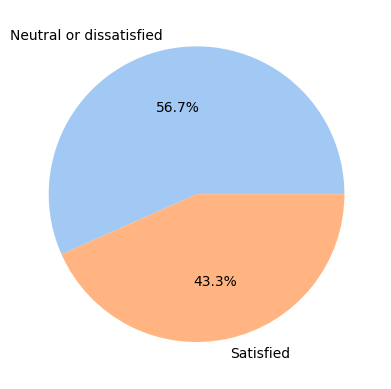
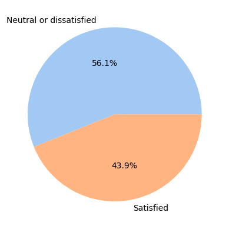
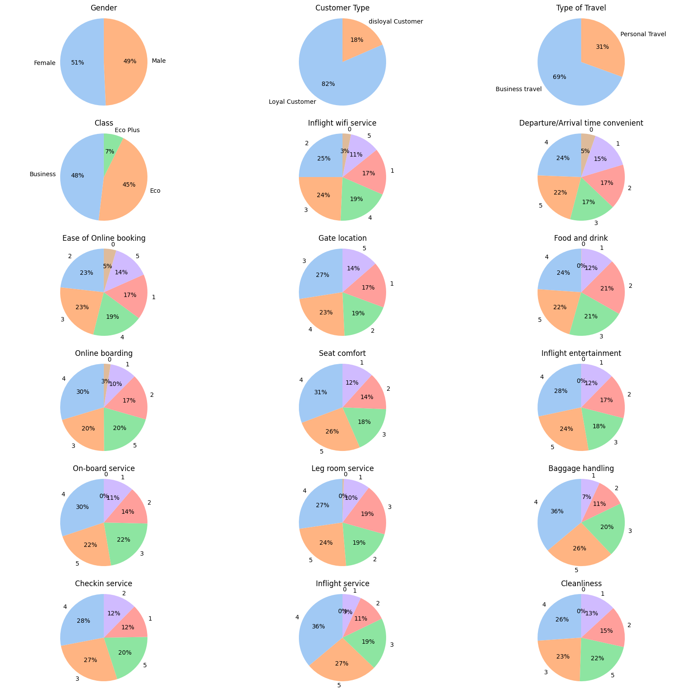
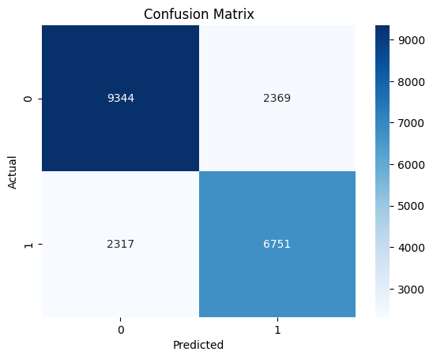
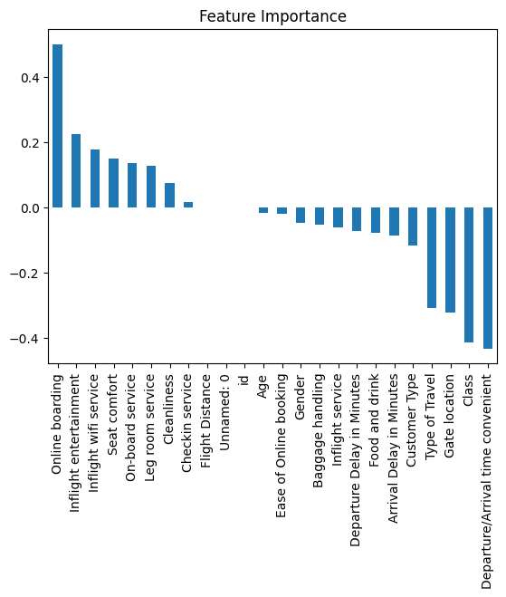
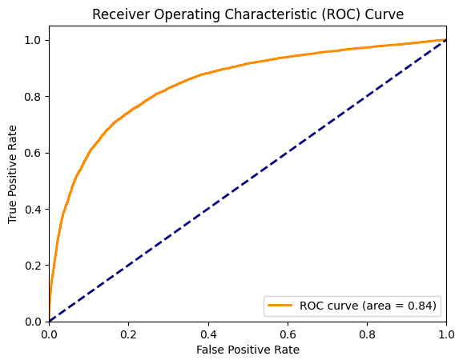

Dataset Description
This dataset contains an airline passenger satisfaction survey. It contains data that is a high level view of non-identifable information of the customer and then some data that would contribute to understanding factors that may help understand what correlated to satisfaction.
The data has been pulled from a public source Kaggle Dataset into a CSV file format, I have chosen to use Python because of the number of rows of data exceeding 100,000+,
whereas excel can handle this it’s already beginning to exceed a point where excel will handle it comfortably and I will notice overhead issues.
Tool Usage
Python was used to build this model, using a Jupyter notebook to document findings, graphicals and explain methods.
In my project, I utilised several Python libraries to perform data analysis, visualisation, and model evaluation.
I used pandas allowing me to efficiently load, clean, and preprocess the dataset.
For splitting the data into training and testing sets, I employed the train_test_split function from the sklearn.model_selection module, which is essential for ensuring the model's performance can be properly validated.
To create visualisations, I used seaborn, for drawing informative statistical graphics. Additionally, I used matplotlib.pyplot for visualisations.
Data Cleansing
Little was required in terms of cleaning the data, mapping the dependent variables to boolean values (so changing Satisfied to a 1 and neutral or dissatisfied to a 0) was done to allow a logistic regression model to be performed on this dataset.
Columns such as Arrival/Depature delay are normalised, using StandardScaler, the data was normalised to create better performance in the model, because the ‘Delay in minutes’ columns had a wider range, normalising the data in these columns allows the data the to train faster because the data is easier to work as the scale has been reduced to closer to 0. This improves the models performance as the data is on a similar scale.
Null values were replaced on Delay columns with the mean to prevent the need to remove data from the datasets. Because of the low percentage of missing values, imputation is a sensible approach to replacing these missing values with the mean of those fields.
The data is split into 2 data files for training and testing the data, totaling up to be 125,000+ rows of data.
Importing code and loading datasets
import pandas as pd
from sklearn.model_selection import train_test_split
from sklearn.preprocessing import StandardScaler, LabelEncoder
from sklearn.linear_model import LogisticRegression
from sklearn.metrics import accuracy_score, confusion_matrix, roc_curve, auc, classification_report
import seaborn as sns
import matplotlib.pyplot as plt
# Load the dataset
train_df = pd.read_csv('train.csv')
test_df = pd.read_csv('test.csv')
#Map the values for the dependent variables to Boolean values to be used later in the model
train_df['satisfaction'] = train_df['satisfaction'].map({'satisfied': 1, 'neutral or dissatisfied': 0})
test_df['satisfaction'] = test_df['satisfaction'].map({'satisfied': 1, 'neutral or dissatisfied': 0})
#Search for number null values
train_df.isnull().sum()
Unnamed: 0 0
id 0
Gender 0
Customer Type 0
Age 0
Type of Travel 0
Class 0
Flight Distance 0
Inflight wifi service 0
Departure/Arrival time convenient 0
Ease of Online booking 0
Gate location 0
Food and drink 0
Online boarding 0
Seat comfort 0
Inflight entertainment 0
On-board service 0
Leg room service 0
Baggage handling 0
Checkin service 0
Inflight service 0
Cleanliness 0
Departure Delay in Minutes 0
Arrival Delay in Minutes 310
satisfaction 0
dtype: int64
test_df.isnull().sum()
Unnamed: 0 0
id 0
Gender 0
Customer Type 0
Age 0
Type of Travel 0
Class 0
Flight Distance 0
Inflight wifi service 0
Departure/Arrival time convenient 0
Ease of Online booking 0
Gate location 0
Food and drink 0
Online boarding 0
Seat comfort 0
Inflight entertainment 0
On-board service 0
Leg room service 0
Baggage handling 0
Checkin service 0
Inflight service 0
Cleanliness 0
Departure Delay in Minutes 0
Arrival Delay in Minutes 83
satisfaction 0
dtype: int64
Normalising Data
Using StandardScaler, the data was normalised to create better performance in the model, because the ‘Delay in minutes’ columns had a wider range, normalising the data in these columns allows the data the to train faster because the data is easier to work as the scale has been reduced to closer to 0.
This improves the models performance as the data is on a similar scale.
#Replace null values using imputation for mean values of the relevant fields.
train_df['Arrival Delay in Minutes'].fillna(train_df['Arrival Delay in Minutes'].mean(), inplace=True)
train_df['Departure Delay in Minutes'].fillna(train_df['Departure Delay in Minutes'].mean(), inplace=True)
test_df['Arrival Delay in Minutes'].fillna(test_df['Arrival Delay in Minutes'].mean(), inplace=True)
test_df['Departure Delay in Minutes'].fillna(test_df['Departure Delay in Minutes'].mean(), inplace=True)
# Initialise the scaler
scaler = StandardScaler()
#Normalise the numerical features in the training data set
train_df[['Arrival Delay in Minutes', 'Departure Delay in Minutes']] = scaler.fit_transform(train_df[['Arrival Delay in Minutes', 'Departure Delay in Minutes']])
# Normalise the numerical features in the testing data set
test_df[['Arrival Delay in Minutes', 'Departure Delay in Minutes']] = scaler.transform(test_df[['Arrival Delay in Minutes', 'Departure Delay in Minutes']])
Exploratory Data Analysis
Data suitablity
Checking the suitabilty of the data in terms of the balance of what we are predicting in logistic regression is important as imbalanced classes in dependent variables can lead to several issues, including the risk of overfitting. However, overfitting itself is not the most immediate risk; rather, the primary concerns are:
Bias towards the majority class: The model may become biased towards predicting the majority class, leading to poor performance on the minority class. This means the model might predict "satisfied" for most cases, even when the true label is "dissatisfied."
Poor generalisation: The model may not generalize well to new data, particularly for the minority class. This happens because the model doesn't learn enough about the minority class to make accurate predictions.
The training data is measured on the left and the test data is measured on the right.


the fairly equal spread suggests this data will be suitable to create a model against and there should be a lower risk of bias or poor generalisation.
Understanding spread of data in independent variables
Viewing the spread of the independent variables helps us to understand the likely potential predictators in our model.
Gender:
Almost equal distribution between male (49%) and female (51%).
Customer Type:
Majority are loyal customers (82%) compared to disloyal customers (18%).
Type of Travel:
Higher proportion of business travel (69%) than personal travel (31%).
Class:
Predominantly business class (48%), followed by economy class (45%), and a small portion in economy plus (7%).
Inflight Wifi Service:
Ratings are fairly distributed with higher counts in mid-ranges (2, 3, 4) and fewer in extremes (1, 5).
Departure/Arrival Time Convenient:
Similar distribution across ratings with slightly fewer extremes.
Ease of Online Booking:
More ratings in the mid-range (2, 3, 4) with fewer extreme ratings.
Gate Location:
Again, higher distribution in the mid-ranges (2, 3, 4).
Food and Drink:
Mid-range ratings are more common, with fewer extremes.
Online Boarding:
Significant portion of high ratings (4, 5), indicating satisfaction with this service.
Seat Comfort:
Mixed distribution with no clear concentration in any specific rating.
Inflight Entertainment:
More mid-range ratings with fewer extremes.
On-Board Service:
Evenly spread across mid-range ratings, with fewer extremes.
Leg Room Service:
Similar mid-range distribution with fewer extremes.
Baggage Handling:
Higher satisfaction (rating 5) is noticeable compared to other ratings.
Check-In Service:
Predominantly higher ratings (4, 5), indicating satisfaction.
Inflight Service:
Higher ratings (4, 5) suggest good service quality.
Cleanliness:
More concentrated in the higher ratings (4, 5), indicating cleanliness satisfaction.
Data Distribution:
The data is fairly balanced in terms of gender, with noticeable skewness towards loyal customers and business travel.
Service ratings generally show a higher frequency of mid-range values, indicating moderate satisfaction levels.
Potential Predictors:
Customer type and class may be strong predictors due to the clear majority in certain categories.
Service ratings like online boarding, inflight service, check-in service, and cleanliness might be significant predictors given their higher satisfaction levels.

Confusion Matrix of Results

Feature Importance
Using feature importance to see Coefficients measured here influence from some variables, suggesting that the odds of satisfaction increase with each unit increase in things like Online boarding, inflight entertainment etc.
and conversely the odds of dissatisfaction increase with things like Departure/arrival time, as these increases the satisfaction will drop

Interpretation of the ROC Curve
The ROC curve and the AUC value of 0.84 suggest that the model has strong performance in distinguishing between the two classes. It is effective at identifying true positives while maintaining a relatively low rate of false positives. This implies that the model is reliable for the given classification task.

Model Performance
The models accuracy was measured at 77% and the Precision, Recall and F1 score were measured at 74%. With a measure of ROC AUC 84%, indicating the model has a good discrimination capability between the measured variable of satisfied and dissatisfied customers.
Finally the confusion matrix measurement showed actual figures of a balanced performance between the classes.
Ethical Considerations
This dataset is public and any personal identifiable information was redacted or not recorded to prevent any privacy concerns, adhering to GDPR and data protection laws.
The application of the model is designed to enhance customer experience in theory by seeing what factors improve satisfaction and are not designed to be intrusive.
Challenges with Features
Challenges in Processing Data
- Handling Missing Values:
- Challenge:
The Arrival Delay in Minutes column had missing values that could skew the results.
- Solution:
Imputed missing values with the mean, preventing missing values harming the results.
- Data Volume:
- Challenge:
The dataset contained over 100,000 rows and 25 columns, leading to high memory usage and longer computation times.
- Solution:
Efficient data handling techniques and using libraries like Pandas and Scikit-learn to streamline preprocessing and model training.
- Categorical Data:
- Challenge:
Categorical features (e.g., `Gender`, `Customer Type`, `Type of Travel`, `Class`) needed to be converted into numerical format for the logistic regression model.
- Solution:
Applied one-hot encoding to convert categorical variables into a format suitable for machine learning algorithms.
Challenges in Visualising Data
- Feature Richness:
- Challenge:
With 25 features, visualising relationships and distributions is complex.
- Solution:
Utilised correlation heatmaps and plotting spread against features to understand the distribution and relationships between features and the target variable.
- Imbalanced Classes:
- Challenge:
The satisfaction target variable might be imbalanced, affecting visualisation clarity.
- Solution:
Plotted the distribution of the target variable to check for imbalance and used stratified sampling during train-test split.
Feature Engineering Performed
- Encoding Target Variable:
Converted the satisfaction column from categorical (e.g., "neutral or dissatisfied", "satisfied") to binary (0 and 1).
- Handling Categorical Features:
Applied one-hot encoding to categorical features to convert them into numerical format.
- Scaling Numerical Features:
Standardised numerical features to have a mean of 0 and a standard deviation of 1, which helps in improving the performance of the logistic regression model.
- Imputing Missing Values:
Imputed missing values in the Arrival Delay in Minutes column with the mean to ensure completeness of data without introducing bias from extreme values.
Conclusion
The overall analysis when related to the research question highlight that variables such as seat comfort, online booking, inflight entertainment etc. were the biggest contributors to satisfaction and should be used to improve the experience for customers, when measuring this data, it can be reliably used within this model to assess whether a customer is likely to be a satisfied customer, but continuous monitoring and updating of the model are necessary to adapt to changing customer preferences and ensure sustained performance. The models performance could further be improved in the future by recording/creating new features to capture underlying patterns better.
I also think there could be confounding variables that haven't been recorded within this data but it cannot be confirmed by this dataset alone. More research is required by myself to utilise things like
using SHAP (SHapley Additive exPlanations) values or LIME (Local Interpretable Model-agnostic Explanations) to understand and validate the influence of each feature on the predictions.